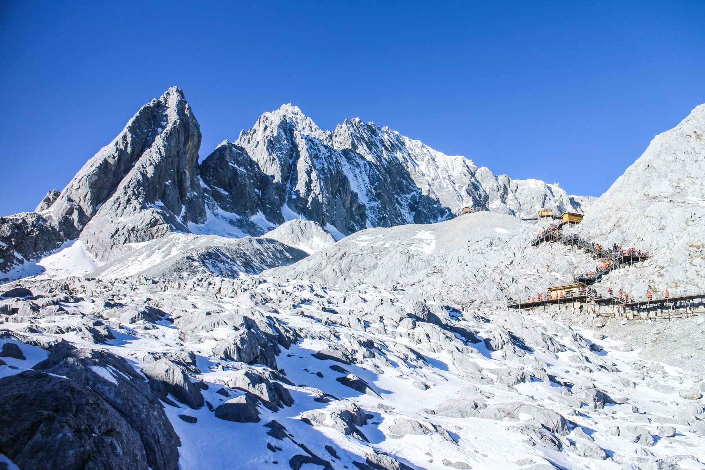

玉龙雪山是丽江知名景点之一，也是纳西族心中的神山，一共13座山峰连绵起伏，似银龙飞舞，因此得名。景区内可以直接乘坐索道上山，轻松欣赏高海拔冰川的瑰丽，是很多游客来此游玩的亮点。
玉龙雪山以"险、奇、美、秀"著称。从山脚到山顶，有亚热带、温带、寒带等多级景观逐级。山脚的甘海子，是一片辽阔的牧场，春夏之际，草甸上龙胆兰、杜鹃盛放，在这里远望，玉龙群峰历历在目。海拔3200多米的云杉坪，更是纳西青年男女心中的圣地。这里是一片幽静的草甸，四周古木参天藤萝密布，环境幽静。玉龙十三峰下有19条现代海洋性冰川，远望如一片瀑布悬挂于扇子陡下方，在阳光的照耀下，泛着银光。游人可乘坐大索道抵达4506米的高度后，沿着山间栈道近距离观赏冰川和主峰的雄姿。
景区受欢迎的索道，将游人从位于甘海子的索道下站运送到海拔4506米的冰川公园。下了索道，沿着冰川上铺设的木质栈道，可一直行进到海拔4680米的最高处，近距离感受雪山和冰川的魅力。如遇大风天气，可能会停运，具体请留意官方消息。
景区受欢迎的索道，将游人从位于甘海子的索道下站运送到海拔4506米的冰川公园。下了索道，沿着冰川上铺设的木质栈道，可一直行进到海拔4680米的最高处，近距离感受雪山和冰川的魅力。如遇大风天气，可能会停运，具体请留意官方消息。
牦牛坪是位于玉龙雪山另一侧面的一块大草坪，距离云杉坪约15公里。登上牦牛坪，可以从另一角度观赏玉龙雪山。
儿童：6周岁(不含)-18周岁(含)的未成年人，半价；6周岁(含) 以下，免费
学生：持全日制大学本 科及以下学历的在读大学，半价
老人：60周岁(含60) -70周岁(不含)的老人，半价；70周岁(含)以上的老人，免费
军人：持本人《军人证》的军人可购此优惠票种入园，优待票
减免人员及持丽江一区四县人员：持减免政策相关证件及持丽江一区四县人员持相关证件，免费
停车场：【玉龙雪山停车场】参考价格：免费；地址：玉龙雪山甘海子（墨水段附件）；库位：200
行李寄存：参考价格：免费；地址：雪厨餐厅1楼可
园内交通：参考价格：20元/人；地址：甘海子停车场处；服务范围为甘海子停车场至冰川公园索道、甘海子停车场至云杉坪索道、甘海子停车场至牦牛坪索道
卫生间：景区设有卫生间，位于雪厨餐厅
吸烟区：地理位置：雪厨餐厅1楼卫生间正对面
母婴室：地址：景区内设有母婴室
母婴室：地址：景区内设有母婴室
自动售卖机：雪厨餐厅1楼，不可使用支付宝/微信支付。
便利店：雪厨餐厅1楼梯
1. 一般阴雨天气除景色会打折外，不会影响景区开放。暴雨、极端恶劣天气时，索道可能停开，这种情况平时较少，如果遇到恶劣天气，前往游玩前建议电话咨询是否开放。
2. 乘坐大索道海拔提升较快，很多人一下子不适应，建议缓慢行动，防止高原反应。若有不良反应也无须惊慌，可到景区医务室咨询、治疗。景区并不禁止老人、小孩前往，不过因海拔较高提升较快，体质弱的游客建议谨慎考虑。
3. 乘坐大索道上山后，温度会比较低，建议携带适度保暖衣物。一般情况下，在山下的着装基础上，加一两件较厚的外套即可。如果是冬季或者雨雪天气则需带羽绒服（景区内服务点也可以租借）。
4. 玉龙雪山景区空气稀薄，紫外线强烈，在景区游玩需注意防晒，建议提前准备好帽子、墨镜和防晒霜等。
5. 不管是丽江古城周围还是玉龙雪山脚下，都有当地人拉客，建议游人“骑马上山、可看全景”等。不建议采信，这类服务无安全保障，而且骑马是绝对不会上到山顶的。
6. 乘坐大索道上山是大众的方式，所以每天排队的人都超级多，夸张的时候单是排队可能就要3-4小时。如果不想排队，建议尽早赶到景区。大索道上下加游玩，一般在4-5小时，下山后，吃点东西，顺路玩下周围的小景点后，就可以回古城了。